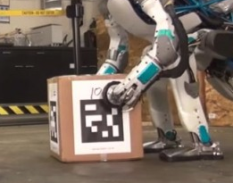
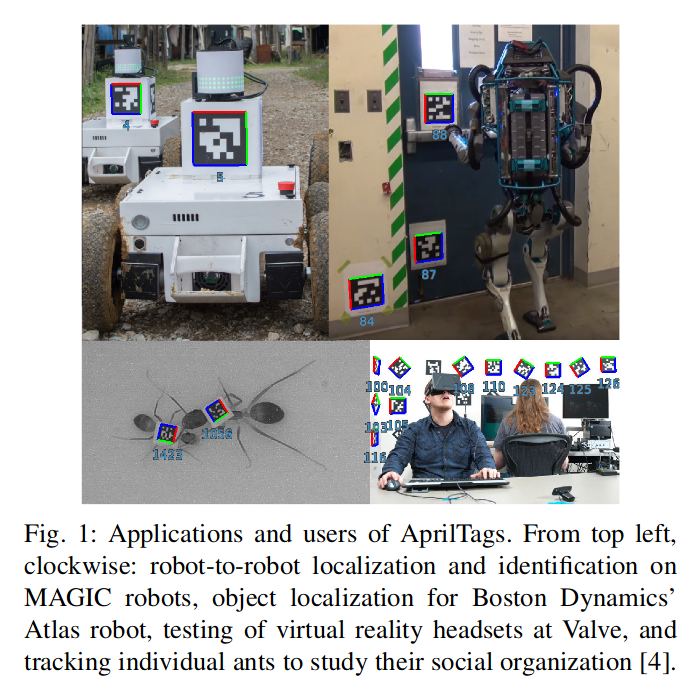
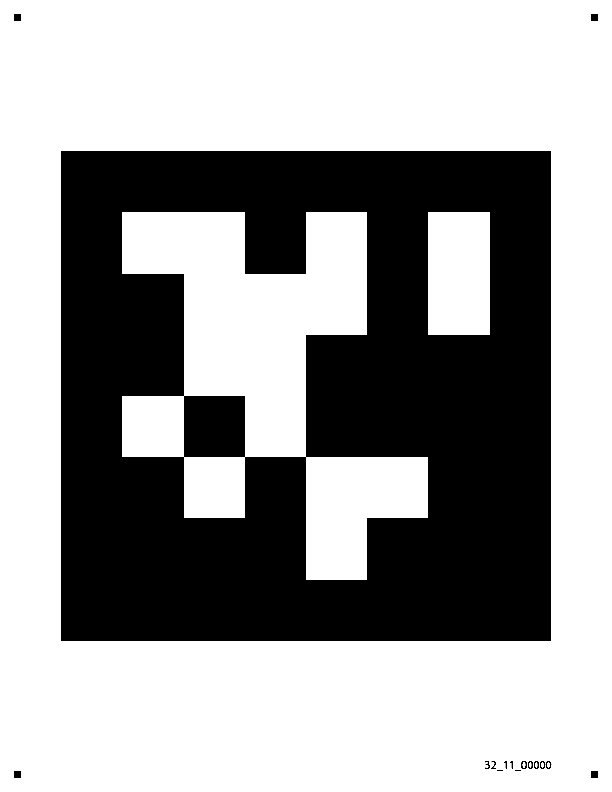
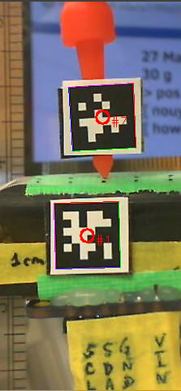
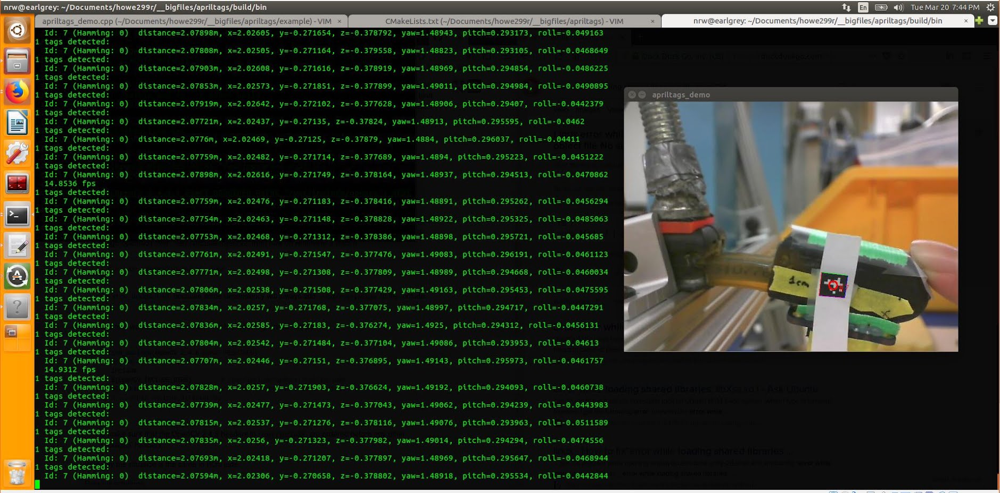

April Tags (Getting Started)
all over the place
used as fiducials for robots trying to walk around a somewhat unstructured environment).

Source: “Atlas, The Next Generation”, BostonDynamics, https://youtu.be/rVlhMGQgDkY?t=1m24s
hgtAnt Tracking

Source: “AprilTag 2: Efficient and robust fiducial detection”, https://april.eecs.umich.edu/media/pdfs/wang2016iros.pdf
{kind=link}
{kind=link}
the internet fell short (optional section)
It was surprisingly hard to find instructions to get started, my search-fu was failing me. My search results turned up the original “official” website from the April Robotics Laboratory at University of Michigan, https://april.eecs.umich.edu/software/apriltag.html
This official site had no “getting started” instructions on it, and same for the C++ wrapper by a researcher at CSAIL (now a professor who I met at CMU!) https://people.csail.mit.edu/kaess/apriltags
And same for the ROS wrapper around the Apriltags, which also confusingly seems to have several version that may or may not now be the same. http://wiki.ros.org/apriltags_ros and https://github.com/xenobot-dev/apriltags_ros
(edit: oh wait neat, there are instructions at https://cmumrsdproject.wikispaces.com/AprilTags_ROS). However, I’m still not terribly familiar with ROS, so I wasn’t too enthused about using this wrapper.
Fortunately Patrick over at Kuindersma’s lab above me was able to get me started.
- Download and install C++ wrapper as per instructions at https://people.csail.mit.edu/kaess/apriltags/
sudo apt-get install subversion cmake libopencv-dev libeigen3-dev libv4l-dev sudo port install pkgconfig opencv eigen3 svn co https://svn.csail.mit.edu/apriltags cd apriltags make ./build/bin/apriltags_demo - Yay, now a window pops open (see “troubleshooting” if it doesn’t, as was the case for me) with a video stream.
But now we need tags for it to recognize
Getting tags
I actually found this pretty annoying, the zipped files on those sites give you a thousand options and it’s not clear which ones will work. So for me, I actually had my friend give me four tags that definitely work.
 ID 0
{kind=link}
{kind=link}
{kind=link}
{kind=link}
Next,
- Print out tag
- Run
./build/bin/apriltags_demo`
Now stick the tag in front of your camera. In the videostream you should now see a circle. In the terminal you should now see data streaming out.
The data display shows distance (from the camera to the tag), the xyz location of the center of the tag, as well as the roll, pitch, and yaw. These coordinates will depend on which side you put pointing up when you pasted the tag on, so beware. In fact, none of the data should be taken as absolute until you calibrate your camera.
2 tags detected:
Id: 1 (Hamming: 0) distance=0.079741m, x=0.000532, y=0.006102, z=-1.487915, yaw=-0.134615, pitch=0.071828, roll=-0.041146
Id: 7 (Hamming: 0) distance=0.079741m, x=0.000532, y=0.006102, z=-1.487915, yaw=-0.134615, pitch=0.071828, roll=-0.041146
14.9312 fps
Two apriltags

{kind=link}
Apriltag_demo

{kind=link}
calibrate camera
I wandered for a while lost in the lands of the official opencv docs.
Fortunately, eventually I found my way to a python library that made the whole process super simple. I ignored the above link (to official openCV docs) entirely. Instead, I used the following python package. All I had to do was print out the checkerboard pattern included in the repository, wave it in front of the camera and record a short video, run the python file, and bam! I had the configuration.yaml file I needed.
https://github.com/smidm/video2calibration
To get it working, I did have to make sure I had pyyaml installed
(venv) nrw@earlgrey:$ sudo -H pip install pyyaml --upgrade
This project is super awesome and included an example you can run right away and inspect. The following line, run in the root takes in the video included in the repo (chessboard.avi) and outputs the resulting configuration file to “calibration.yaml”.
(venv) nrw@earlgrey:~/projects/video2calibration$ ./calibrate.py example_input/chessboard.avi calibration.yaml --debug-dir out
At this point I printed out the checkboard pattern included in the repository, put it on a stiff surface, and then opened cheese (you don’t have to use cheese, we just need to record a video).
Then I waved my board around in front of the camera and recorded a short video.
{kind=link}
{kind=link}
Anyhow, I record ten or fifteen seconds of video. Then I ran
nrw@earlgrey:~/projects/video2calibration$ ./calibrate.py ~/Videos/Webcam/2018-03-26-112657.webm calibration.yaml --debug-dir out
Performing calibration...
RMS: 0.442700776066
camera matrix:
[[ 666.78668352 0. 343.73827809]
[ 0. 665.79103853 227.19081685]
[ 0. 0. 1. ]]
distortion coefficients: [ 6.06301194e-02 -1.94620209e-02 1.45555284e-04 1.24410189e-03
-2.51439333e-01]
Input calibration parameters into source code
Edit into the demo file
nrw@earlgrey:~/projects/apriltags/example$ vi apriltags_demo.cpp
Specifically, we want to change the following section. Note that we are using the definition of the rotation matrix to pull out (from the calibration.yaml output) the focal point and principal point parameters.
public:
// default constructor
Demo() :
// default settiwgs, most can be modified through command line options (see below)
[...excerpted section...]
m_width(640),
m_height(480),
m_tagSize(0.00944), // in meters
m_fx(667), // in pixels
m_fy(666), //
m_px(344), // principal point
m_py(227),
Ah! I forgot, we also needed to measure, using a ruler (or calipers), the size of the apriltag in real life. So just measure one of the sides of the tag (which should be square…) and put it inoto m_tagSize. (The width and height should be the size in pixels of the image from the video camera).
Compile and run (use “make clean” if the build fails, then run “make” again)
nrw@earlgrey:~/projects/apriltags/example$ cd ..
nrw@earlgrey:~/projects/apriltags/example$ make
Then run the program:
nrw@earlgrey:~/projects/apriltags/$ ./build/bin/apriltag_demo
One easy way to double-check whether the camera is roughly calibrated is to physically measure the distance between the camera and the tag, and then compare to the “distance” output in your terminal. Hopefully they match…
Units
The roll, pitch, and yaw are reported in radians. To convert into degrees, multiply by 57.3 (approximately).
Framerate
A framerate of 17fps or so is totally reasonable, since the apriltags demo is decently compute intensive. I had a problem with lag, where the video ran smoothly but with a significant lag – this may have been a result of me running the entire thing in a virtual machine. Let me know if you don’t have lag!
Troubleshooting
I had a somewhat frustrating beginning where I couldn’t get the example program to run.
-- Found OpenCV: /opt/ros/lunar (found version "3.3.1")
framerate (17fps raesonable, but lag???)
output is in radians
9.23346 fps
0 tags detected:
0 tags detected:
0 tags detected:
0 tags detected:
0 tags detected:
0 tags detected:
0 tags detected:
0 tags detected:
1 tags detected:
OpenCV Error: Assertion failed (mtype == type0 || (((((mtype) & ((512 - 1) << 3)) >> 3) + 1) == 1 && ((1 << type0) & fixedDepthMask) != 0)) in create, file /tmp/binarydeb/ros-lunar-opencv3-3.3.1/modules/core/src/matrix.cpp, line 2542
terminate called after throwing an instance of 'cv::Exception'
what(): /tmp/binarydeb/ros-lunar-opencv3-3.3.1/modules/core/src/matrix.cpp:2542: error: (-215) mtype == type0 || (((((mtype) & ((512 - 1) << 3)) >> 3) + 1) == 1 && ((1 << type0) & fixedDepthMask) != 0) in function create
Id: 15 (Hamming: 1)Aborted (core dumped)
It turned out that because I had ROS installed, or perhaps also because I installed the “apriltags” ROS wrapper, I was having openCV version conflicts.
/tmp/binarydeb/ros-lunar-opencv3-3.3.1
vs
rw@earlgrey:~$ pkg-config --modversion opencv
2.4.9.1
To solve, I simply had to edit one line in the CMakeLists.txt to force it to use the right version of openCV. I added an “exact required” tag, along with my openCV version (2.4.9.1), to the appropriate line.
nrw@earlgrey:~/projects/apriltags$ vi CMakeLists.txt
(line 14)
find_package(OpenCV 2.4.9.1 EXACT REQUIRED)
Then I ran “make” and then the program itself
nrw@earlgrey:~/projects/apriltags/$ ./build/bin/apriltag_demo
and the example program worked! Huzzah.